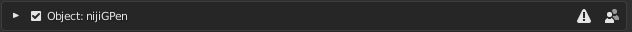
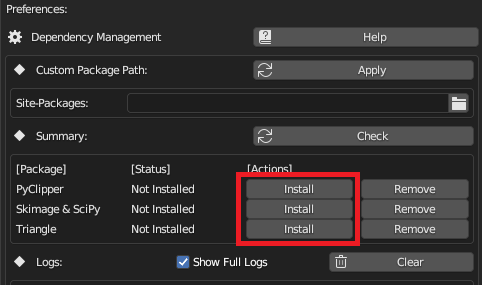

安装 #
不同于通常的Blender插件，NijiGPen的多数功能都依赖于一些第三方的Python软件包。推荐在安装插件时阅读Python依赖项页面以了解相关信息。
需求 #
- Blender 3.3 ~ 4.1
（推荐使用稳定版本，插件无法保证在beta或alpha版本中所有功能均可工作。）
安装步骤 #
-
从GitHub Release中下载插件压缩包。请注意不要直接下载GitHub中的源代码，因为它可能包含一些尚未测试过的修改。
-
在Blender的
[编辑]->[偏好设置]->[插件]点击安装按钮选择下载的压缩包，勾选插件名称前的方框以启用。

- 在Python依赖项页面中检查需要哪些第三方软件包，用设置面板中的按钮安装它们，本步骤需要保持联网状态。

升级步骤 #
-
升级Blender: 将Blender升级至新版本后，需要重新执行上述第三步（检查/安装Python依赖）。
-
升级本插件: 安装新版本插件时，推荐首先卸载旧版本并重启Blender。
卸载步骤 #
卸载插件并不会自动删除安装的Python软件包，若想释放硬盘空间，请使用设置面板中的按钮卸载它们。